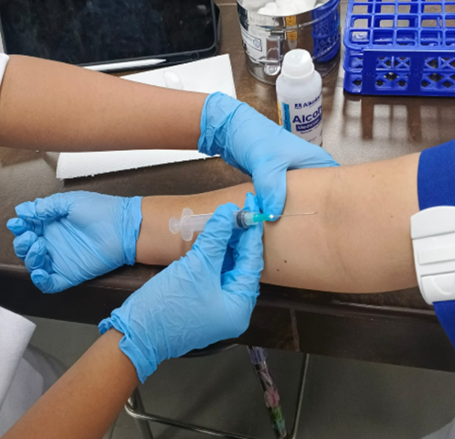

Objetivo general
Determinar cuantitativamente las concentraciones de colesterol total y triglicéridos en muestras de suero mediante espectrofotometría.
¿Qué nos cuentan unas gotas de suero sobre nuestros lípidos? En esta práctica medimos colesterol y triglicéridos, seguimos las reacciones en el laboratorio y comparamos los resultados.
Los lípidos desempeñan funciones esenciales en el organismo: constituyen reservas energéticas, forman parte de las membranas celulares y participan en la síntesis de moléculas señalizadoras. El colesterol y los triglicéridos circulan principalmente asociados a lipoproteínas.
En esta práctica fuimos del tubo de ensayo a los números: aprovechamos reacciones que producen color para estimar cuánto colesterol y cuántos triglicéridos hay en el suero. La absorbancia nos da una pista, y el estándar nos ayuda a convertirla en concentración.
Determinar cuantitativamente las concentraciones de colesterol total y triglicéridos en muestras de suero mediante espectrofotometría.
Los triglicéridos se hidrolizan y sus productos participan en una secuencia de reacciones enzimáticas que produce un compuesto coloreado. Su intensidad, medida aproximadamente a 546 nm, es proporcional a la concentración.
Enzimas implicadas: lipasa, glicerol cinasa, glicerol-3-fosfato oxidasa y peroxidasa.
Los ésteres de colesterol se hidrolizan; el colesterol se oxida y el peróxido generado interviene en una reacción cromogénica. La absorbancia se registra aproximadamente a 546 nm.
Enzimas implicadas: colesterol esterasa, colesterol oxidasa y peroxidasa.
Cinco preguntas rápidas para activar lo que ya sabes. No cuenta para nota: es solo para entrar en modo bioquímica.
Revisar las instrucciones del kit específico antes de reproducir el ensayo.
Aquí podrás contar el experimento con tus propias fotos. Cada paso tiene también una pequeña explicación de lo que sucede a nivel bioquímico.
Se recolectó sangre en un tubo sin anticoagulante, se dejó coagular y luego se centrifugó para separar el suero.
La coagulación permite retirar células y fibrina. En el suero quedan los lípidos que analizaremos, asociados a lipoproteínas.

Foto 1. Obtención de la muestra y separación del suero.
Se identificaron los tubos y se colocaron 1 mL de reactivo y, según el tubo, 10 µL de estándar o suero.
El blanco permite ajustar la señal de fondo; el estándar aporta una concentración conocida para calcular las muestras.
Foto 2. Preparación del blanco, estándar y muestras.
Se mezclaron los componentes y se incubaron durante 5 minutos a 37 °C, siguiendo el procedimiento de la práctica.
Las enzimas del reactivo transforman los analitos y generan peróxido de hidrógeno; la peroxidasa participa en la formación del producto coloreado.
Foto 3. Mezcla e incubación.
Se registró la absorbancia: triglicéridos a 546 nm y colesterol total a 546 nm.
La cantidad de producto coloreado se relaciona con la absorbancia. En el rango válido del método, mayor concentración implica mayor señal.
Foto 4. Lectura en el espectrofotómetro.
Se comparó la absorbancia de cada muestra con la del estándar de su grupo y se obtuvieron las concentraciones en mg/dL.
Aplicamos C = (A muestra / A estándar) × C estándar. Cada grupo debe usar su propio estándar; una lectura aislada no equivale a un diagnóstico.
Foto 5. Cálculos e interpretación.
Los datos están separados por analito y por grupo, ya que se utilizaron diferentes absorbancias de estándar. Las muestras se presentan mediante códigos para evitar divulgar resultados personales en una web pública.
Estándar del primer grupo: absorbancia = 0.075; concentración conocida de triglicéridos = 200 mg/dL. Este estándar se utiliza exclusivamente para calcular las tres muestras de este grupo.
| Muestra | Absorbancia | Triglicéridos (mg/dL) | Clasificación |
|---|---|---|---|
| Estándar (grupo 1) | 0.075 | 200.00 | Referencia de calibración |
| T1-01 | 0.037 | 98.67 | Normal |
| T1-02 | 0.064 | 170.67 | Límite alto |
| T1-03 | 0.011 | 29.33 | Bajo |
Ejemplo: (0.037 × 200) / 0.075 = 98.67 mg/dL
Estándar: absorbancia 0.107 · concentración asumida de 200 mg/dL (confirmar con el kit).
| Muestra | Absorbancia | Triglicéridos (mg/dL) | Clasificación |
|---|---|---|---|
| Estándar | 0.107 | 200.00 | Control |
| T2-01 | 0.071 | 132.71 | Normal |
| T2-02 | 0.117 | 218.69 | Alto |
| T2-03 | 0.163 | 304.67 | Alto |
| T2-04 | 0.050 | 93.46 | Normal |
| T2-05 | 0.137 | 256.07 | Alto |
Estándar: absorbancia 0.170 y concentración 200 mg/dL.
| Muestra | Absorbancia | Colesterol (mg/dL) | Clasificación |
|---|---|---|---|
| Estándar | 0.170 | 200.00 | Control |
| C1-01 | 0.254 | 298.82 | No validado |
| C1-02 | 0.297 | 349.41 | No validado |
| C1-03 | 0.210 | 247.06 | No validado |
| C1-04 | 0.268 | 315.29 | No validado |
| C1-05 | 0.371 | 436.47 | No validado |
Ejemplo: (0.254 × 200) / 0.170 = 298.82 mg/dL
Estándar: absorbancia 0.192 · concentración 200 mg/dL.
| Muestra | Absorbancia | Colesterol (mg/dL) | Clasificación |
|---|---|---|---|
| Estándar | 0.192 | 200.00 | Control |
| C2-01 | 0.190 | 197.92 | Deseable* |
| C2-02 | 0.098 | 102.08 | Deseable |
| C2-03 | 0.225 | 234.38 | Límite alto |
| C2-04 | 0.256 | 266.67 | Alto |
| C2-05 | 0.144 | 150.00 | Deseable |
*Clasificación orientativa habitual: colesterol deseable <200 mg/dL. Si se utiliza el umbral de la guía de laboratorio (≤190 mg/dL), 197.92 mg/dL queda por encima de ese límite.
Línea punteada: 150 mg/dL (límite orientativo).
Línea punteada: 200 mg/dL (límite orientativo). Los valores C1-01 a C1-05 del primer grupo son datos no validados por posible interferencia o contaminación; se muestran solo para documentar el experimento.
Introduce los valores de absorbancia de tu muestra y del estándar. El resultado se calcula en el navegador, sin enviar información a ningún servidor.
Fórmula: C = (A muestra / A estándar) × C estándar. Es un cálculo académico; no constituye un diagnóstico.
En las muestras analizadas se observaron diferencias en las concentraciones de colesterol total y triglicéridos. Para triglicéridos, el valor máximo registrado fue de 304.67 mg/dL en el segundo grupo; para colesterol total, la mayor concentración calculada fue de 436.47 mg/dL en el primer grupo, pero ese conjunto de mediciones quedó en revisión.
Observación sobre el colesterol del grupo 1: todas las muestras mostraron concentraciones inusualmente altas y se sospecha una posible contaminación o interferencia durante el procedimiento. No se ha demostrado la causa exacta, por lo que no es correcto concluir que todas las personas presentan hipercolesterolemia. Estos datos se reportan como resultados experimentales preliminares y requieren repetición con controles de calidad antes de cualquier interpretación clínica.
La presencia de resultados por encima de los intervalos orientativos destaca la utilidad de la determinación espectrofotométrica para la evaluación del perfil lipídico. Sin embargo, una lectura aislada no establece una enfermedad: se requiere considerar el contexto clínico, las condiciones preanalíticas, la calibración y el control de calidad.
Haz clic en cada pregunta para desplegar su respuesta.
Las dislipidemias pueden asociarse con aterosclerosis, cardiopatía isquémica, accidente cerebrovascular, síndrome metabólico, diabetes tipo 2 y enfermedad hepática esteatósica asociada a disfunción metabólica. La hipertrigliceridemia grave eleva el riesgo de pancreatitis aguda. Concentraciones bajas pueden relacionarse con malabsorción, desnutrición, hipertiroidismo o alteraciones hereditarias.
Endógena: acetil-CoA → acetoacetil-CoA → HMG-CoA → mevalonato (HMG-CoA reductasa) → unidades isoprenoides → escualeno → lanosterol → colesterol. Exógena: colesterol de la dieta → micelas intestinales → absorción por NPC1L1 → esterificación por ACAT2 → quilomicrones → remanentes captados por el hígado. La vía del mevalonato pertenece exclusivamente a la síntesis endógena.
DHAP → glicerol-3-fosfato; ácido graso + CoA + ATP → acil-CoA; glicerol-3-fosfato + acil-CoA → lisofosfatidato (GPAT); lisofosfatidato + acil-CoA → ácido fosfatídico (AGPAT); ácido fosfatídico → diacilglicerol (lipina); diacilglicerol + acil-CoA → triacilglicerol (DGAT). La síntesis de novo de ácidos grasos puede aportar precursores, pero no es obligatoria.
Los quilomicrones llevan triglicéridos alimentarios desde el intestino; las VLDL distribuyen triglicéridos sintetizados en el hígado; las LDL transportan colesterol hacia tejidos; las HDL participan en el transporte reverso del colesterol al hígado. La lipoproteína lipasa libera ácidos grasos de quilomicrones y VLDL.
Después de revisar los resultados y el cuestionario, comprueba cuánto recuerdas con estas cinco preguntas.
Se aplicaron métodos enzimáticos colorimétricos para calcular concentraciones séricas de colesterol total y triglicéridos a partir de sus absorbancias.
Se identificaron diferencias entre las muestras. Los resultados de colesterol del primer grupo se consideran no validados por sospecha de contaminación o interferencia analítica, y deben repetirse antes de interpretarlos clínicamente.
El perfil lipídico es útil para evaluar alteraciones metabólicas y riesgo cardiovascular, siempre junto con información clínica y control de calidad analítico.
Referencias adicionales proporcionadas para el informe. Verifica los datos editoriales y completa los del kit utilizado antes de la entrega.